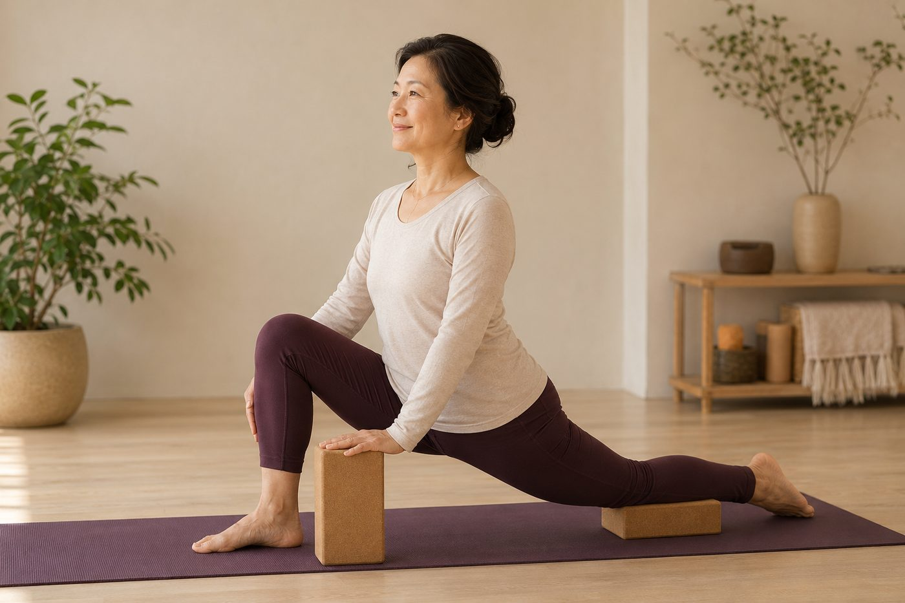

「開髖」到底在開哪裡？久坐族為什麼特別需要

一聽到「開髖」，很多人腦中浮現的就是劈腿貼地、或把腳盤到誇張角度的那種照片，然後默默替自己蓋章：那是天生軟的人在玩的，跟我無關。先別急著出局。如果開髖真的只是為了劈腿，它就不會是久坐族最該補的一課了。它開的到底是哪裡？為什麼整天坐著的人特別需要？我們慢慢說。
先破一個迷思：開髖，不等於劈腿
開髖聽起來像柔軟度表演，其實它講的是髖關節這顆「球窩關節」的活動度。髖關節是大腿骨的股骨頭嵌在骨盆的髖臼裡，像一顆球放在碗裡，本來就能往好幾個方向轉：往前抬、往後伸、往外打開、往內夾，還能向內、向外旋轉。
所以所謂開髖，開的不是「把兩腿掰到一直線」這單一方向，而是把這顆球在碗裡各個方向都轉得順、轉得滿的能力找回來。劈腿，只是其中一個最極端、也最不日常的方向而已。把它當成開髖的全部，就像把「跑馬拉松」當成「會走路」的唯一標準——難怪你會覺得自己永遠不及格。
髖的四周，是一整圈肌肉在拔河
為什麼開髖不是拉某一條肌肉就能解決？因為包住髖關節的，是一整圈、拉往不同方向的肌肉，它們平常就在互相拔河：
- 髂腰肌——在髖的前側，負責把大腿往上抬，也是久坐最容易被縮短的一條。
- 臀大肌、臀中肌——在後側與外側，把腿往後伸、往外撐，也負責穩住骨盆。
- 內收肌群——大腿內側那一疊，把腿往身體中線夾回來。
- 梨狀肌等深層旋轉肌——藏在臀部深處，管的是髖的向外旋轉。
這一圈肌肉，只要有幾條又緊又短、又有幾條太鬆不出力，這顆球在碗裡就會被拉得偏向一邊，某些方向自然就卡住了。所以開髖真正在做的，是把這一圈張力重新調回平衡，而不是單挑某一條拚命拉——這也是為什麼「哪裡緊拉哪裡」常常沒用。
久坐，為什麼是開髖最大的對手
講到這裡，就知道久坐族為什麼特別需要開髖了。你坐著的時候，髖關節長時間卡在接近九十度的屈曲——大腿跟軀幹夾成直角，而且一坐就是好幾個鐘頭。
前側的髂腰肌被折在這個短短的位置太久，久了它就「記住」這個長度，變得又緊又不肯伸長；同一時間，後側的臀大肌整天被你壓在椅子上、幾乎不必出力，慢慢就「睡著」、叫不太動。一條在前面死拉、一條在後面罷工，髖的平衡當然就歪掉了。
久坐族真正卡住的，多半不是大腿內外側那些「拉起來很有感」的地方，而是前側被坐短的髂腰肌，加上後面睡著的臀肌——方向抓錯，難怪怎麼拉都覺得沒鬆到重點。
這也是為什麼有些人明明常拉筋，還是覺得髖緊緊卡卡、蹲不低、盤腿坐不住：他們一直在拉「有感覺」的地方，卻沒去處理真正被坐出問題的那兩組肌肉。臀肌會怎麼跟著「失憶」，也可以看久坐讓屁股失憶，怎麼把它叫醒。
開髖真正想還給你的，是骨盆的自由
還有一層更關鍵的連動，很多人沒想到。髂腰肌的另一端，並不是接在大腿，而是接在你的腰椎和骨盆內側。當它被久坐拉得又緊又短，它會像一條繃緊的繩子，從前面把骨盆往前下方拽——骨盆一旦被拉成前傾，肚子就往前凸、腰椎跟著過度前凹，你的下背於是整天痠緊。
所以開髖真正想做的，從來不是讓你能劈腿，而是把髖的活動度、還有骨盆「想前傾能前傾、想擺正能擺正」的自由還給你。髖鬆開了、髂腰肌不再死拉，骨盆才有機會回到中立，小腹凸和腰痠也常跟著鬆一口氣。想更懂這條連動，可以看骨盆前傾為什麼讓小腹跟著凸。
壁繩很適合拿來練這種「有支撐的開髖」。繩子能先接住一部分腿或身體的重量，讓你在放鬆、不硬掰的前提下，把髖安全地往各個方向帶開；尤其在伸展前側髂腰肌時，支撐能幫你穩住骨盆，不會為了拉開髖而把腰整個塌下去代償。方向對、又有東西幫你穩住，身體才敢真的放鬆下來。
你卡的是前側、後側，還是骨盆？先看清楚
AI 體態檢測（現場做）能幫你看出骨盆的前後傾、髖的活動狀況，老師再依你真正卡住的方向，安排適合的開髖練法，不用再盲拉硬掰。
預約首次 NT$199 AI 體態檢測所以，你可以怎麼做
先把觀念換過來：開髖的重點不是「掰得多開」，而是「各個方向轉得順、骨盆能自由」。對久坐族來說，第一步往往不是去追劈腿，而是每坐一段時間就起身動一動，別讓髂腰肌一直被坐短，也給臀肌一點醒過來的機會。溫和、有支撐的髖伸展，比咬牙硬掰安全也有效得多。
也要誠實說：髖四周這一圈張力，是好幾年坐出來的，不會一兩次就改寫。給它幾週、規律地練，方向抓對了，你會先感覺到坐久沒那麼卡、蹲下去順一點——那就是髖，正在慢慢把自由還給你。
本頁為體態與姿勢的一般衛教與練習分享，非醫療診斷或治療。若有疼痛、舊傷或特殊病史，請先諮詢合格醫療專業人員。